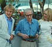

Nouse Film Awards Site 2012
Globes
Michelle Williams- a winner’s profile
Since winning Best Actress in a Comedy or Musical at The Golden Globes, Elle Hoppe takes a look at some of Michelle Williams’ finest works.
BAFTAs
 An obsession with the past?
James Tyas looks at the Academy’s obsession with the past, and whether they get it right.
Oscars
In praise of Sundance
Film editor Elle Hoppe praises the indie film scene at the Sundance Film Festival.
-
Strangely, they are showing Inland Empire on ITV1 right now. Not Lynch's best by a long way but still worth a watch 11:25 PM, Nov 26th 2012
-
http://t.co/f7n7YR0f … Death scenes from 36 Hitchcock films synchronised. Pretty cool 3:43 PM, Nov 25th 2012
-
RT @emmafgreen: A breakdown of the sound in a scene from Killing Them Softly http://t.co/QmvbYax3 3:39 PM, Nov 25th 2012
-
RT @yorknouse: We're moving towards our next production week.. If you'd like to write, you can email the relevant section from here: htt ... 10:17 AM, Nov 22nd 2012
-
RT @TommyGorilla: Very nice article by @yorknouse makes me appear smart and witty http://t.co/dhur5idg @asffest 8:28 PM, Nov 21st 2012
- Follow @nousefilm on Twitter
Trailers
Trailers
The Scoop: The Artist – a cultural review
There is just something special about removing the dialogue from a film, wiping the colour and taking us back to what some might call a Golden Age of cinema.
The Scoop: Hugo
Hugo is an atypical Martin Scorsese movie; it contains none of the building blocks that have made Scorsese one of the best directors of the last 35 years
The Scoop: The Hunger Games
The film industry’s desperate need of a new teen sensation seems to have found a fitting successor with this new series.